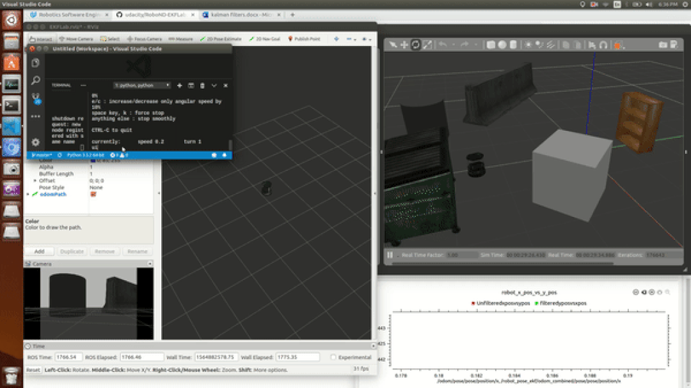

Extended Kalman Filter
Summary
In this project, five ROS packages are used:
- turtlebot_gazebo: It lanunches turtlebot inside the gazebo environment.
- robot_pose_ekf: This package uses the extended kalman filter algorithm to filter noisy data and will estimate robot's pose and orientation
- odom_to_trajectory: Converts the Odom values generated overtime into trajectory path
- turtlebot_teleop: This package help the user to control the robot from keyboard.
- rviz: Lets you visualize estimated robot position and orientation.